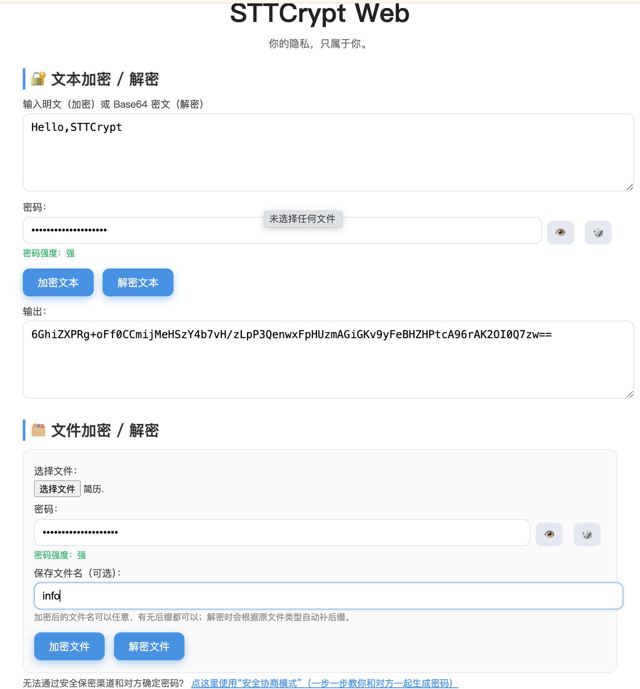

STTCrypt 是一个 轻量、免安装、跨平台、即开即用 的加密工具，帮助你在任何环境下保护自己的隐私内容。
无论你要发送私密信息，保存重要文件，还是只想避免他人误看某些资料，STTCrypt 都能把你的内容变成需要密码才能解开的“密文”。即使你的聊天软件、云盘或邮件被别人获取，也无法查看内容。
即使你和对方无法私下安全传密码，STTCrypt 也提供 安全协商模式，能让双方在不安全的环境下生成同一把密码。
例如：身份证号、银行资料、工作文件、私人照片等。加密后，即使聊天记录或云盘泄露，也没人能看到内容。
把文件加密后保存，别人双击也无法看到内容。
发加密后的文件，对方只需密码就能解密，中间任何人都看不到内容。
利用 STTCrypt 的本地加密，你可以保存私人备忘、账号密码等敏感内容。
与银行、政府、企业同级的加密标准。内容未经授权无法解密。
可加密任意文本、图片、视频、文档及压缩包。
界面干净，无繁琐选项，打开即可使用。
基于浏览器运行，电脑与手机均可使用；随时随地加解密。
所有操作均在本地完成，无数据发送到互联网。
无需安装即可运行，代码透明可审计，更可信赖。

1. 加密
输入密码 → 输入内容或选择文件 → 点击「加密」
生成的内容可以放心发送给任何人。
2. 解密
输入密码 → 输入对方发给你的密文或选择加密文件 → 点击「解密」
3. 密码建议
为了安全，推荐使用 16 位以上的密码，可包含大小写字母、数字和符号。你也可以使用 🎲 一键生成强密码。
4. 你和对方无法私下安全传密码？
可以使用：
👉 《安全协商模式》（教你在不安全的环境下，也能和对方生成同一把密码）
你的电脑、手机、云盘中保存了大量信息：如身份证号、工作资料、私人照片、生活记录等。这些内容一旦泄露，可能造成经济损失、身份冒用、隐私暴露等问题。
加密就是把内容变成别人看不懂的乱码，只有知道密码的人才能恢复原文。就像给信息上锁一样，没有钥匙的人永远打不开。
- 安全地传输敏感内容
- 在不安全的平台上传输/存储信息
- 保护设备里的私密文件
- 保存账号密码、备忘录等敏感信息
采用国际公认的 AES-256-GCM，加上 PBKDF2 强化密码处理，确保安全。简洁，开源，离线运行，不上传任何数据，确保你的隐私足够安全，真正只属于你。